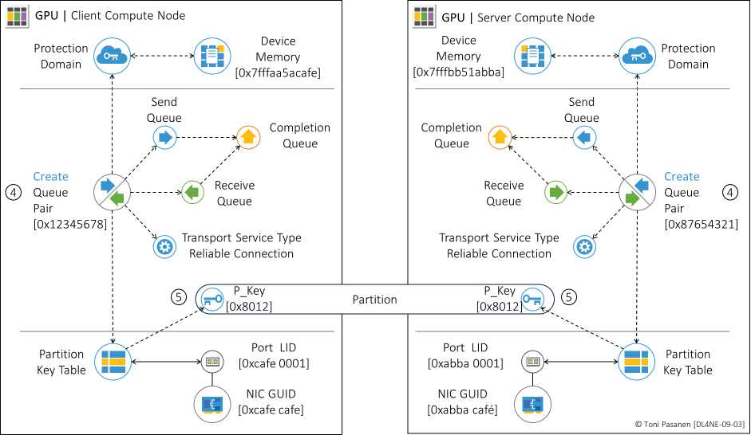
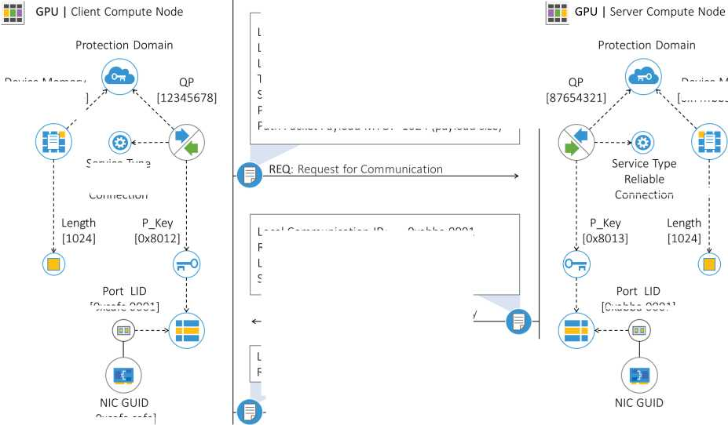

RDMA CM over TCP：交换 QP 号、R_Key、内存地址；转 UDP 建 RoCE 连接；之后 Work Request（RDMA Write/Read/Send）直接走数据面。控制面 TCPpipe 稳，数据面 UDP 求快——与网工“带外管理+带内转发”异曲同工。
RDMA Write 含：R_Key + 远端地址 + 长度 + 数据。网卡收到后校验 R_Key，直写应用内存，回 ACK/CQ。书 p217-219 报文拆解 + p219 配置要点（MTU、DSCP、PFC 使能）务必看。中间丢包→重传→训练停顿，极端重开整轮。
RoCE 前置：全路径 MTU 一致（9000）、PFC/ECN/DCQCN（Ch11）、ECMP/喷洒（Ch12）、Rail 拓扑（Ch13）。RDMA 把可靠性外包给了 Fabric，网配错一个，训练慢十倍。


列出 RoCE 上线前 4 项网络检查（MTU/PFC/ECN/负载）。